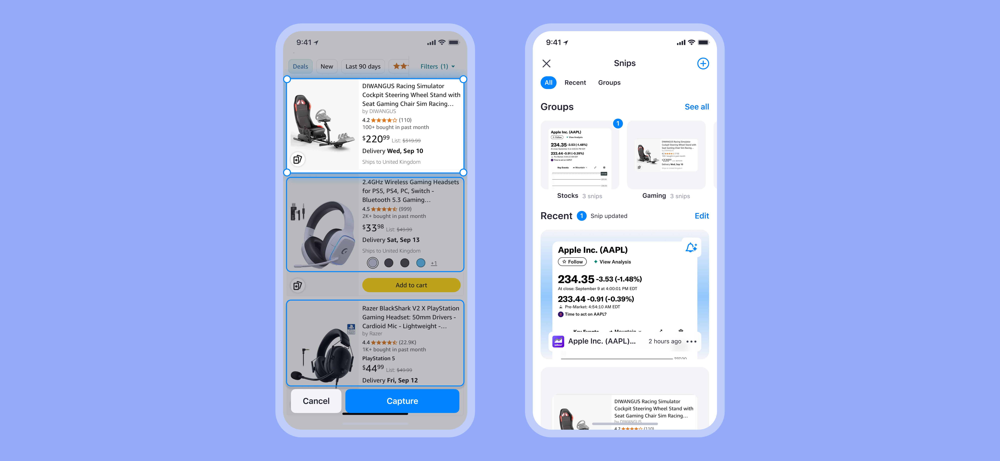
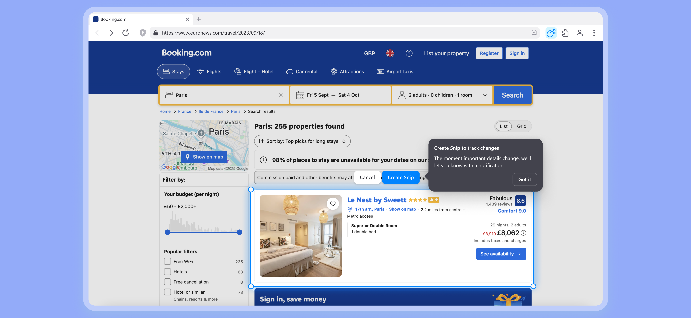
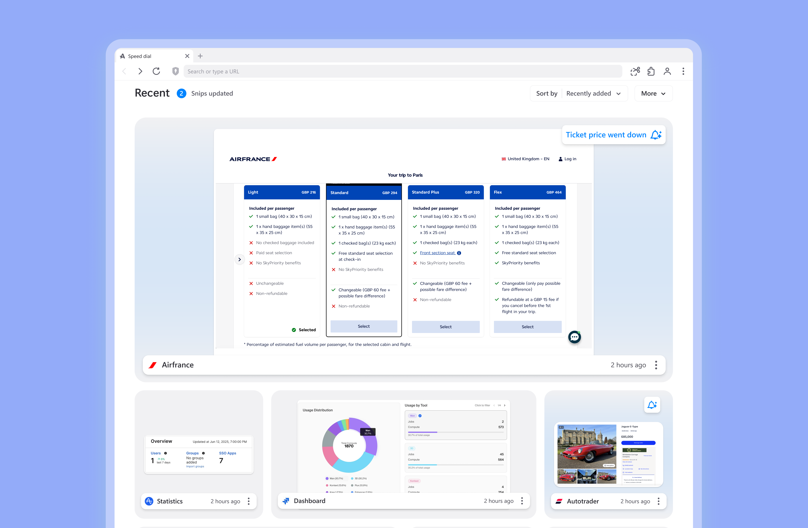

Snips AI Assistant
AI-powered content tracking for prices, deals, and page changes
AI-powered tool that tracks price changes, content updates, and deals across websites—eliminating manual checking
Impact
Currently in beta with positive tester feedback
Designed AI-powered tracking across iOS, Android, and Desktop. Users can track flights, stocks, products, and custom content changes without manual monitoring.
"Finally, I don't have to check flight prices manually every day" — Beta tester
Beta testing showed strong engagement with stock price tracking, flight monitoring, and e-commerce deal alerts as top use cases. Users appreciated flexible notification prompts over rigid templates.
The Problem
Users wanted to track price changes, content updates, and deals across websites without manually checking back. Existing solutions required technical knowledge or lacked flexibility for diverse use cases.
My Role
Designed AI-powered tracking tool for iOS, Android, and Desktop. Focused on making AI behavior intuitive and trustworthy through transparent notifications and flexible organization.
Process
Started with user research on existing tracking behaviors and pain points with competitor tools. Mapped out diverse tracking scenarios from stock prices to flight deals. Prototyped multiple AI prompt patterns, testing natural language vs structured templates. Prioritized transparency in how AI interprets tracking requests to build user trust.
Solution
Visual Examples

Track TV show releases, flight prices, and shopping deals all in one place with custom AI notifications
Mobile Solution

Groups (Stocks, Gaming) with update notifications and recent activity feed

Natural language prompts let users define exactly what changes they want to track
Desktop Solution

Create snips directly from hotel booking sites with customizable notification triggers

Comprehensive dashboard showing all tracked items with real-time updates and notifications
Key Takeaways
- AI transparency builds trust: Made AI behavior predictable through clear notification prompts
- Flexibility over rigidity: Custom prompts handle diverse use cases better than predefined templates
- Balance automation with control: Users needed to understand what AI was tracking and why
- Organization prevents overwhelm: Grouping and categorization essential for managing multiple tracked items
Aloha Browser
Read full case study